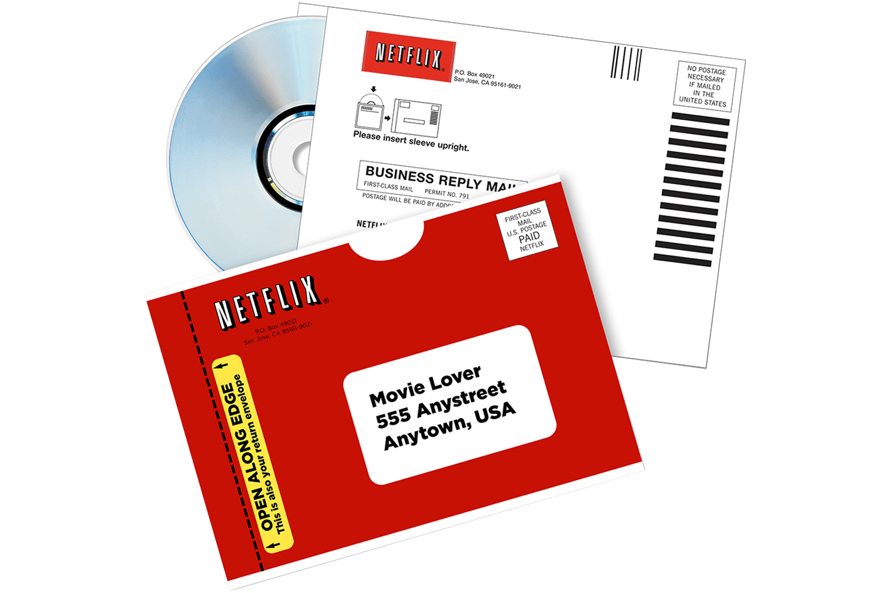
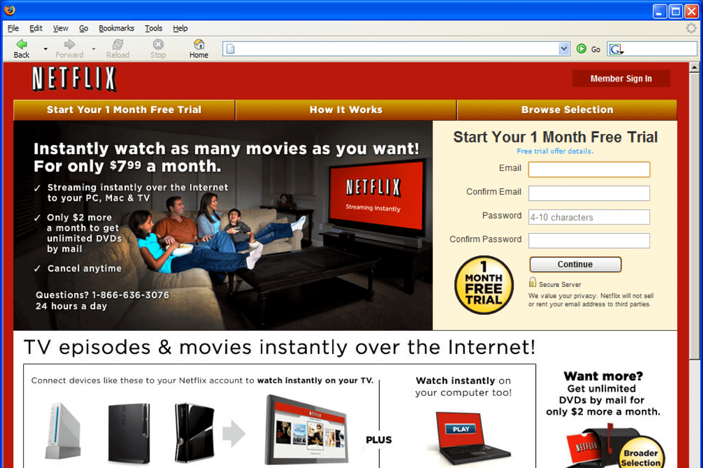

Con más de 182 millones de suscriptores en 2020, Netflix, puede presumir con orgullo de ser la plataforma de video predominante en el mundo del streaming.
El DVD fue el inicio
Fue creada en California (Estados Unidos), el 29 de agosto de 1997, por Reed Hastings y Marc Randolph. Es de rumorología popular que la chispa de la idea comenzó cuando Hastings alquiló en la cadena de videoclubs Blockbuster la película Apolo 13, y no hizo la devolución de la cinta hasta varios días después, por lo que tuvo que pagar una penalización de 40 dólares.Molesto por la situación, Hastings se propuso crear una empresa de videoclubes, donde los usuarios pudiesen adquirir temporalmente el servicio sin multas, ni responsabilidad con la compañía.
Por su parte, Marc Randolph escribió en el libro Netflixed: the epic battle for America's eyeballs, que su idea estaba basada en querer crear un negocio en Internet, electrónico, que tuviese que ver con los DVD. Fue entonces que con estas dos ideas, los ahora fundadores de Netflix fueron moldeando sus visiones: Hasting como director general y Randolph como director de mercadotecnia.
En sus inicios Netflix era una plataforma de videoclub virtual, donde los usuarios seleccionaban las películas en línea y las obtenían mediante el correo postal. Randolph y Hastings comenzaron con un catálogo inicial de casi 1.000 títulos y una propuesta que fue una de las primeras claves de su éxito: se podía devolver el DVD hasta una semana después, aunque fuera de estreno. En ese momento, lo clientes de un videoclub estaban obligados a devolver lo alquilado en 24 o 48 horas. El modelo de Netflix ahorraba todos esos viajes a la tienda física y daba más margen para disfrutar de la película.
"Su éxito se ha ido cocinando a fuego lento, donde tan importante como los contenidos ha sido crear un vínculo especial con el consumidor. Han sabido crear una marca querible por el espectador. La gente siente que habla su lenguaje y siente su catálogo como suyo. Y ahí han sentado las bases de un poderoso y rentable vínculo", comenta a Verne el periodista y crítico televisivo Borja Terán, columnista de La Información.
El servicio streaming como disparador
Como todavía seguían en pérdidas, los dueños de Netflix plantearon en el año 2000 una alianza empresarial con Blockbuster, pero la compañía reina de los videoclubs prácticamente se rio en su cara. En el 2007, justo en el mismo año en que Netflix llegaba a los 1.000 millones de DVDs alquilados, Netflix empezó a moverse de ese campo y a introducir el concepto VOD, contenido bajo demanda vía Internet, y conforme el mercado del DVD iba decayendo, el Netflix online que conocemos hoy en día iba reforzándose y creciendo.Los primeros meses, la visualización del catálogo electrónico era accesible solo a través de computadoras. En 2008 la compañía buscó alianzas con diferentes empresas y productos para incluir una aplicación en consolas de videojuegos como Xbox de Microsoft o en diversas marcas de reproductores de Blu-ray, para que, a través de estos dispositivos, también se pudieran ver las series y películas del catálogo. Un año más tarde, la aplicación se incluyó en algunas televisiones inteligentes, y para 2010 en otros aparatos que se conectaban a internet como el Nintendo Wii, la iPad, iPhone y iPod touch de Apple. El nuevo servicio de streaming pronto ganó popularidad por el acceso ilimitado, personalizado y sin publicidad que ofrecía, además de por la posibilidad de crear distintos perfiles entre las personas que compartían la contraseña de una sola cuenta, situación que Netflix no detuvo, sino que aprovechó pues significaba la obtención de más datos de distintas personas que sirvieron para "alimentar" su algoritmo y conocer mejor los gustos del público.
En una conversación con el curador de TED Chris Anderson, el cofundador y director ejecutivo de Netflix, Reed Hastings, habla sobre la audaz cultura interna de la empresa, el poderoso algoritmo que alimenta sus recomendaciones, el valor de $ 8 mil millones en contenido en el que están invirtiendo este año y sus actividades filantrópicas que respaldan la innovación. educación, entre mucho más.
La primera producción de contenido original de Netflix fue la serie House of Cards, un drama político que actualmente cuenta con cinco temporadas. A esta serie le han seguido otras como Stranger Things, The Crown o La maldición de Hill House, tres de las series más exitosas de los últimos años. Las producciones originales de Netflix, tanto series como películas, están teniendo una gran aceptación por el público y lo cierto es que, los seguidores esperan ansiosos los estrenos de las nuevas temporadas para hacer una maratón de capítulos, por lo que, apostar por sus propias producciones ha sido uno de los mayores éxitos de la plataforma. De hecho, la creación de sus propios contenidos viene propiciada por las dificultades que empezaron a encontrar con algunas productoras a la hora de emitir sus contenidos. Una solución a un pequeño problema que ha resultado ser todo un hito comercial.
Los contenidos de propia creación son, por tanto, una de las claves del éxito de Netflix, una idea que, a pesar del paso de los años, sigue en auge. Pero, ¿a qué se debe? La cuestión es muy sencilla y puede que te sientas identificado con ella. Cuando Netflix estrena una serie de contenido original, tiene todos los derechos sobre ella y sobre su divulgación, no se puede ver en ningún otro sitio ni de ninguna otra manera que no sea pagando una suscripción mensual. A esto hay que añadirle, por supuesto, las historias diferentes, entretenidas y con una muy buena trama, que son las que hacen que los usuarios nos enganchemos a ellas. A partir de aquí, se entabla una relación duradera que se mantiene en el tiempo tantas temporadas como Netflix quiere. Es por ello que, durante los últimos años y estreno tras estreno, se ha asegurado unos suscriptores fieles a la marca y que apuestan por los contenidos originales. Añadido a la buena fama que le ha otorgado el éxito de sus series originales, hace que la marca “producido por Netflix” sea sinónimo de entretenimiento asegurado.
En definitiva, el principal factor del triunfo de Netflix es que han sabido escuchar a sus suscriptores, conocerlos y entender qué necesitaba el mercado de las plataformas online. El resultado ha sido su apuesta por series y películas de contenido original, para ser una plataforma innovadora en su sector, con un éxito que ha superado cualquier expectativa. Por eso se ha ganado el primer puesto en el ranking de plataformas streaming, por delante de todos sus competidores.
En septiembre del 2021 Netflix, por primera vez desde que se posicionó en lo más alto del mundo del streaming, publicó dos top 10, uno de series y otro de películas, con sus producciones originales más populares por la cantidad de horas de visualización en las que los usuarios disfrutaron de esos contenidos en el primer mes de los lanzamientos.

Películas
La lista oficial más reciente cuenta con 10 películas de todos los géneros, aquellas que cuentan con la mayor cantidad de horas vistas hasta septiembre del año pasado.
- Bird Box— 282 millones de horas
- Extraction — 231 millones de horas
- The Irishman — 215 millones de horas
- The Kissing Booth 2 — 209 millones de horas
- 6 Underground — 205 millones de horas
- Spenser Confidential — 197 millones de horas
- Enola Holmes — 190 millones de horas
- Army of the Dead — 187 millones de horas
- The Old Guard — 186 millones de horas
- Murder Mystery — 170 millones de horas
Series
El top 10 de series muestra a las ficciones más populares por horas de visualización en sus primeros 28 días de lanzamiento, encabezado por Bridgerton:
- Bridgerton, temporada 1 — 625 millones de horas
- La Casa de Papel, temporada 4 — 619 millones de horas
- Stranger Things, temporada 3 — 582 millones de horas
- The Witcher, temporada 1 — 541 millones de horas
- 13 Reasons Why, temporada 2 — 496 millones de horas
- 13 Reasons Why, temporada 1 — 476 millones de horas
- You , temporada 2 — 457 millones de horas
- Stranger Things, temporada 2 — 427 millones de horas
- La Casa de Papel, temporada 3 — 426 millones de horas
- Ginny & Georgia, temporada 1 — 381 millones de horas